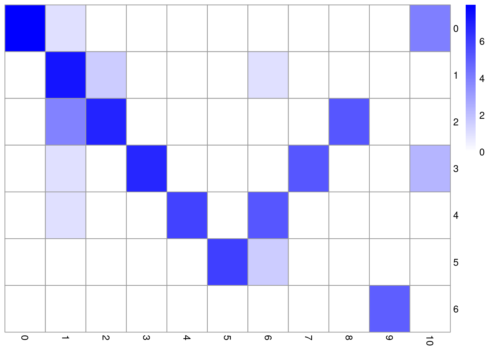

if (!require("BiocManager", quietly = TRUE))
install.packages("BiocManager")
if (!require("pacman", quietly = TRUE))
BiocManager::install("pacman")
p_load("SingleCellExperiment")
p_load("Seurat")
p_load("hdf5r")
p_load("DropletUtils")
p_load("dplyr")
p_load("scater")
p_load("Matrix")
p_load("scran")
p_load("ggplot2")
p_load("igraph")
p_load("SingleR")
p_load("celldex")
p_load("iSEE")
p_load("Nebulosa")
p_load("UpSetR")
p_load("clustree")
p_load("Rmagic")
p_load("SeuratWrappers")
#p_load("harmony")
if (!require("devtools"))
install.packages("devtools")
if(!require("findPC"))
devtools::install_github("haotian-zhuang/findPC")
if(!require("SeuratWrappers"))
remotes::install_github('satijalab/seurat-wrappers')sc_integration
Data Integration
Pre-process
if(!file.exists("pbmc_1k_v2_filtered_feature_bc_matrix.tar.gz")){
system("wget -q https://cf.10xgenomics.com/samples/cell-exp/3.0.0/pbmc_1k_v2/pbmc_1k_v2_filtered_feature_bc_matrix.tar.gz && tar xzvf pbmc_1k_v2_filtered_feature_bc_matrix.tar.gz && mkdir -p chem2 && mv filtered_feature_bc_matrix chem2")}
if(!file.exists("pbmc_1k_v3_filtered_feature_bc_matrix.tar.gz")){
system("wget -q https://cf.10xgenomics.com/samples/cell-exp/3.0.0/pbmc_1k_v3/pbmc_1k_v3_filtered_feature_bc_matrix.tar.gz && tar xzvf pbmc_1k_v3_filtered_feature_bc_matrix.tar.gz && mkdir -p chem3 && mv filtered_feature_bc_matrix chem3")}
mat<-Seurat::Read10X(data.dir = "chem2/filtered_feature_bc_matrix/")
chem2<- CreateSeuratObject(counts = mat, project = "chem2", min.cells = 0, min.features =0)
mat<-Seurat::Read10X(data.dir = "chem3/filtered_feature_bc_matrix/")
chem3<- CreateSeuratObject(counts = mat, project = "chem3", min.cells = 0, min.features =0)
chem2[["Mitochondrial"]] <- PercentageFeatureSet(chem2, pattern = "^MT-")
qc.lib2 <- scater::isOutlier(chem2$nCount_RNA, log=TRUE, type="lower",nmads=3) #sce_data$sum
qc.nexprs2 <- isOutlier(chem2$nFeature_RNA, log=TRUE,nmads=3, type="lower") #sce_data$detected
qc.mito2 <- isOutlier(chem2$Mitochondrial ,nmads=3,type="higher") #sce_data$subsets_Mitochondrial_percent
discard2 <- qc.lib2 | qc.nexprs2 | qc.mito2
chem2$discard<-discard2
chem2<-subset(chem2,subset= discard!=TRUE)
chem3[["Mitochondrial"]] <- PercentageFeatureSet(chem3, pattern = "^MT-")
qc.lib2 <- scater::isOutlier(chem3$nCount_RNA, log=TRUE, type="lower",nmads=3) #sce_data$sum
qc.nexprs2 <- isOutlier(chem3$nFeature_RNA, log=TRUE,nmads=3, type="lower") #sce_data$detected
qc.mito2 <- isOutlier(chem3$Mitochondrial ,nmads=3,type="higher") #sce_data$subsets_Mitochondrial_percent
discard2 <- qc.lib2 | qc.nexprs2 | qc.mito2
chem3$discard<-discard2
chem3<-subset(chem3,subset= discard!=TRUE)Join Cells
seurat_data_merged<-merge(chem2,chem3,add.cell.ids = c("V2", "V3"), project = "merged")
seurat_data_merged <- NormalizeData(seurat_data_merged, normalization.method = "LogNormalize", scale.factor = 10000, verbose=F)
seurat_data_merged <- FindVariableFeatures(seurat_data_merged, assay="RNA",selection.method = "vst", nfeatures = 2000, verbose=F)
seurat_data_merged <- ScaleData(seurat_data_merged, features = rownames(seurat_data_merged))Centering and scaling data matrixseurat_data_merged <- RunPCA(seurat_data_merged,
features = VariableFeatures(object = seurat_data_merged),
verbose = F,npcs = 50)
seurat_data_merged <- RunUMAP(seurat_data_merged,reduction = "pca",verbose = F,dims = 1:11)Warning: The default method for RunUMAP has changed from calling Python UMAP via reticulate to the R-native UWOT using the cosine metric
To use Python UMAP via reticulate, set umap.method to 'umap-learn' and metric to 'correlation'
This message will be shown once per sessionDimPlot(seurat_data_merged, reduction = "umap",group.by = "orig.ident")Integration Seurat
seurat.list<-list(chem2,chem3)
seurat.list <- lapply(X = seurat.list, FUN = function(x) {
x <- NormalizeData(x,verbose=F)
x <- FindVariableFeatures(x, selection.method = "vst", nfeatures = 2000,verbose=F)
})
# select features that are repeatedly variable across datasets for integration
features <- SelectIntegrationFeatures(object.list = seurat.list)
head(features)[1] "GNLY" "IGLC2" "IGKC" "GZMB" "S100A8" "S100A9"length(features)[1] 2000anchors <- FindIntegrationAnchors(object.list = seurat.list, anchor.features = features,verbose = F)
seurat_combined <- IntegrateData(anchorset = anchors)Merging dataset 1 into 2Extracting anchors for merged samplesFinding integration vectorsFinding integration vector weightsIntegrating dataseurat_combined <- ScaleData(seurat_combined, features = rownames(seurat_combined))Centering and scaling data matrixseurat_combined <- RunPCA(seurat_combined,
features = VariableFeatures(object = seurat_combined),
verbose = F,npcs = 50)
seurat_combined <- RunUMAP(seurat_combined,reduction = "pca",verbose = F,dims = 1:11)
seurat_combined <- FindNeighbors(seurat_combined, reduction = "pca", dims = 1:30)Computing nearest neighbor graphComputing SNNseurat_combined <- FindClusters(seurat_combined, resolution = 0.5)Modularity Optimizer version 1.3.0 by Ludo Waltman and Nees Jan van Eck
Number of nodes: 2005
Number of edges: 92431
Running Louvain algorithm...
Maximum modularity in 10 random starts: 0.9063
Number of communities: 11
Elapsed time: 0 secondsDimPlot(seurat_combined, reduction = "umap",group.by = "orig.ident")DimPlot(seurat_combined, reduction = "umap", split.by = "orig.ident")seurat_combinedAn object of class Seurat
35538 features across 2005 samples within 2 assays
Active assay: integrated (2000 features, 2000 variable features)
1 other assay present: RNA
2 dimensional reductions calculated: pca, umap
Important
Integrated values should not be used for marker identification. It is important, in case of Seurat Object, to set the default assay again as the normalized values.
Integration Harmony
seurat_data_harmony<-harmony::RunHarmony(seurat_data_merged,group.by.vars = "orig.ident")Harmony 1/10Harmony 2/10Harmony 3/10Harmony 4/10Harmony converged after 4 iterationsWarning: Invalid name supplied, making object name syntactically valid. New
object name is Seurat..ProjectDim.RNA.harmony; see ?make.names for more details
on syntax validityseurat_data_harmony <- RunUMAP(seurat_data_harmony,reduction = "harmony",verbose = F,dims = 1:11)
DimPlot(seurat_data_harmony, reduction = "umap",group.by = "orig.ident")Evaluating integration
seurat.list <- lapply(X = seurat.list, FUN = function(x) {
x<- ScaleData(x, features = rownames(x))
x <- RunPCA(x,features = VariableFeatures(object = x),
verbose = F,npcs = 50)
x <- RunUMAP(x,reduction = "pca",verbose = F,dims = 1:11)
x <- FindNeighbors(x, reduction = "pca", dims = 1:30)
x <- FindClusters(x, resolution = 0.5)
x <- FindVariableFeatures(x, selection.method = "vst", nfeatures = 2000,verbose=F)
})Centering and scaling data matrixComputing nearest neighbor graphComputing SNNModularity Optimizer version 1.3.0 by Ludo Waltman and Nees Jan van Eck
Number of nodes: 927
Number of edges: 45294
Running Louvain algorithm...
Maximum modularity in 10 random starts: 0.8671
Number of communities: 7
Elapsed time: 0 secondsCentering and scaling data matrixComputing nearest neighbor graphComputing SNNModularity Optimizer version 1.3.0 by Ludo Waltman and Nees Jan van Eck
Number of nodes: 1078
Number of edges: 41871
Running Louvain algorithm...
Maximum modularity in 10 random starts: 0.8839
Number of communities: 9
Elapsed time: 0 secondstab<- data.frame(before=seurat.list[[1]]$seurat_clusters, after=seurat_combined[,colnames(seurat.list[[1]])][[]]$seurat_clusters) %>% table()
pheatmap::pheatmap(log2(tab+1), color=colorRampPalette(c("white", "blue"))(101),cluster_rows = F,cluster_cols = F)
tab<- data.frame(before=seurat.list[[2]]$seurat_clusters, after=seurat_combined[,colnames(seurat.list[[2]])][[]]$seurat_clusters) %>% table()
pheatmap::pheatmap(log2(tab+1), color=colorRampPalette(c("white", "blue"))(101),cluster_rows = F,cluster_cols = F)DefaultAssay(seurat_combined) <- "RNA"
Idents(seurat_combined) <- seurat_combined$seurat_clusters
conserved.markers <- FindConservedMarkers(seurat_combined, ident.1 = 0, grouping.var = "orig.ident", verbose = FALSE)
head(conserved.markers) chem2_p_val chem2_avg_log2FC chem2_pct.1 chem2_pct.2 chem2_p_val_adj
S100A12 3.003171e-177 5.122899 0.988 0.044 1.007203e-172
VCAN 1.115710e-165 3.402782 0.912 0.021 3.741867e-161
CD14 1.741667e-113 2.201955 0.680 0.018 5.841202e-109
MNDA 2.973783e-152 3.370733 0.932 0.065 9.973475e-148
MS4A6A 1.950469e-149 2.957007 0.876 0.034 6.541484e-145
S100A8 6.811264e-146 6.405144 1.000 0.216 2.284362e-141
chem3_p_val chem3_avg_log2FC chem3_pct.1 chem3_pct.2 chem3_p_val_adj
S100A12 2.358008e-213 4.469216 0.987 0.025 7.908287e-209
VCAN 7.530415e-206 3.974759 0.990 0.048 2.525551e-201
CD14 2.686868e-202 2.871006 0.967 0.038 9.011218e-198
MNDA 4.119775e-194 3.409500 1.000 0.083 1.381690e-189
MS4A6A 4.972831e-194 2.830633 0.974 0.045 1.667788e-189
S100A8 7.148624e-194 6.448778 1.000 0.108 2.397506e-189
max_pval minimump_p_val
S100A12 3.003171e-177 4.716016e-213
VCAN 1.115710e-165 1.506083e-205
CD14 1.741667e-113 5.373736e-202
MNDA 2.973783e-152 8.239549e-194
MS4A6A 1.950469e-149 9.945662e-194
S100A8 6.811264e-146 1.429725e-193Differential Expression
seurat_combined$clust_orig.ident<- paste(seurat_combined$seurat_clusters,seurat_combined$orig.ident, sep = "_")
Idents(seurat_combined) <- "clust_orig.ident"
dfex_clust0<- FindMarkers(seurat_combined, ident.1 = "0_chem2", ident.2 = "0_chem3", verbose = FALSE,only.pos = F)
head(dfex_clust0, n = 15) p_val avg_log2FC pct.1 pct.2 p_val_adj
RPL21 3.961619e-91 1.5783971 1.000 1.000 1.328648e-86
RPL7 1.727843e-90 1.9019795 1.000 0.997 5.794838e-86
MT-ND1 8.752324e-90 -1.7221381 0.988 0.997 2.935355e-85
RPL13A 1.078006e-89 2.1108584 1.000 0.987 3.615415e-85
MT-ATP6 1.463502e-87 -1.5094426 0.996 0.997 4.908293e-83
RPS27 9.397522e-86 1.2758131 1.000 1.000 3.151741e-81
RPL27A 7.646383e-85 2.0900508 0.992 0.967 2.564444e-80
TMSB4X 1.067049e-83 1.0082501 1.000 1.000 3.578668e-79
RPL34 3.778420e-82 1.2388800 1.000 1.000 1.267207e-77
RPS17 6.336518e-82 2.8078563 0.968 0.683 2.125142e-77
RPLP2 1.131240e-81 1.4007701 1.000 0.993 3.793954e-77
RPS15 1.567411e-80 1.2551856 1.000 1.000 5.256783e-76
MT-CO3 6.279638e-80 -0.9356098 0.996 0.997 2.106065e-75
RPL39 9.870788e-79 0.8841529 1.000 1.000 3.310465e-74
MT-CO2 2.136420e-76 -0.8839316 1.000 0.997 7.165126e-72VlnPlot(seurat_combined, features = "CRIP1", split.plot = T,split.by = "orig.ident", group.by = "seurat_clusters",pt.size = 0.2)The default behaviour of split.by has changed.
Separate violin plots are now plotted side-by-side.
To restore the old behaviour of a single split violin,
set split.plot = TRUE.
This message will be shown once per session.seurat_combined@assays$RNA@data["SUB1",] %>% as_tibble(rownames = "Cell") %>% left_join(as_tibble(seurat_combined[[]], rownames="Cell"), by=c("Cell")) %>%
filter(seurat_clusters==0)%>%
ggplot(aes(x=seurat_clusters, y=value))+geom_violin(aes(fill=orig.ident),scale = "width", adjust=1) #ggbeeswarm::geom_quasirandom(size=0.1)+
#theme(legend.position = "none")
VlnPlot(seurat_combined, features = "ISG15", group.by = "seurat_clusters",pt.size = 0.2,fill.by = "orig.ident",)remotes::install_github("Oshlack/speckle")Skipping install of 'speckle' from a github remote, the SHA1 (83df3e9e) has not changed since last install.
Use `force = TRUE` to force installation